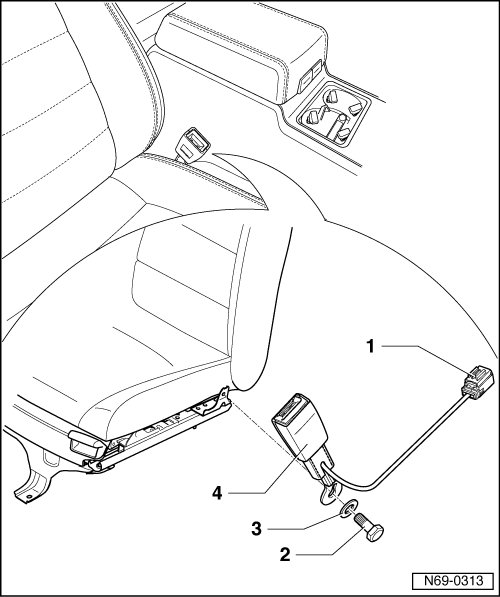

Front Belt Buckle
Front Belt Buckle
• Removal and installation is described for the right-hand side of the vehicle. Removal and installation for the left-hand side is performed in the same manner.
Removing
- Remove belt anchor --> [ Belt Anchor ] Belt Anchor.
- Remove 12-way seat --> [ Front Seat ] Front Seats.
- Disconnect wiring harness from belt buckle - 1 - at coupling station under seat.
- Detach wiring harness from seat frame.
- Remove bolt - 2 - (50 Nm), remove spring washer - 3 - and belt buckle - 4 - from seat.

Installing
- Perform the steps used for removal in reverse order.